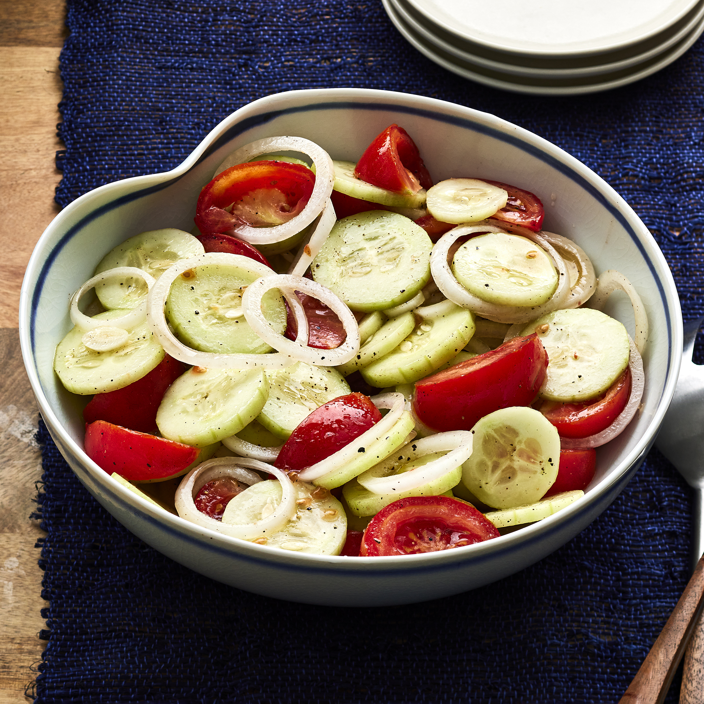

Homepage
Marinated Cucumber, Onion and Tomato Salad

(Description)This easy cucumber, onion, and tomato salad is perfect for a warm summer day.
There's a lot to love about this top-rated cucumber tomato salad recipe.
It's inexpensive to make using everyday ingredients,
it's a crisp and refreshing side dish that goes with just about anything,
and it has make-ahead convenience built right in.
Ingredients (Serves 6)
- 1 cup water
- 1/2 cup distilled white vinegar
- 1/4 cup vegetable oil
- 1/4 cup sugar
- 1 teaspoon salt, or to taste
- 1 teaspoon freshly ground black pepper or to taste
- 3 cucumbers,peeled and sliced 1/4-inch thick
- 3 tomatoes, cut into wedges
- 1 onion, sliced and separated into rings
Steps
- Whisk water, vinegar, oil, sugar, salt, and pepper together
in a large bowl until smooth; add cucumbers, tomatoes, and onion and stir to coat.
- Cover bowl with plastic wrap; refrigerate for at least 2 hours.